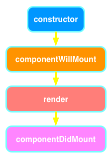
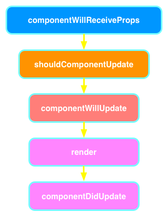

React on Rakia
Make the web fun again
About Me

About Me
17 Years in Business
9 Years @ Java2Days
Published Author
Software Consultants
Invented the Internet
To our success!
WebSocket Book

http://bit.ly/websocketbook
Key Points
Functional programming is awesome (avoid change in state, immutable)
Components are beautiful
JavaScript sucks, but React and Redux with ES6 make it bearable
Circa 2005
Component-based
Just Java and Just HTML
React is...
Circa 2013
Component-based
Just JavaScript and JSX (embedded XML)
Only the 'V' in MVC
No ugly templates
React Lifecycle
Mounting
Called when component created or inserted into DOM
Updating
Changes to props or state or component re-render
Virtual DOM
React's solution to fast DOM updates
Pure JavaScript
In-memory representation of DOM
render() runs whenever something changes
Diffs with the old one
Batch executes all queued updates
Conventions for this talk
Code will be using ES6, transpiled using Babel
Uses npm scripts rather than Grunt or Gulp
yarn instead of npm because it's superior
Create React App
https://github.com/facebookincubator/create-react-appDe-facto standard for boostrapping React
Hands-On Demo
Functional stateless components
Also called presentational/dumb components
import React from ‘react’;
const App = ({name}) => (
Hello, {name}!
);
export default App;
Container components
The stateful kind
import React from ‘react’;
import App from './App';
class AppContainer extends React.Component {
constructor() {
super();
this.state = {};
}
componentDidMount() {
this.setState({name: 'Java2Days'});
}
render() {
return <App name={this.state.name} />;
}
}
setState()
Performs shallow merge of next state into current state. Triggers eventual UI update.
propTypes
a property on the component class, defines what types the props should be.
In dev mode, warning is shown but skipped in prod for efficiencyprops
properties defined by the called of the component
state
user-defined data defined by the component as a plain-ole javascript object
modified usingsetState() so it is queued properly with other updates
Hands-On Demo
Resources for React
Redux
Redux
A better Flux implementation
A predictable state container for JavaScript apps
No dispatcher, Single store, Immutable
Flux Architecture


Action Creators
function savePaste(code) {
return {
type: SAVE_PASTE,
code
}
}
Reducers
const INITIAL_STATE = {
pastes: {
paste: null,
error: null,
loading: false
}
};
export default function pasteReducer(state = INITIAL_STATE, action) {
switch (action.type) {
case SAVE_PASTE:
return { ...state, pastes: { paste: null, error: null, loading: true }};
default:
return state
}
}
Mapping state and dispatch
import { connect } from 'react-redux';
const mapDispatchToProps = (dispatch) => {
// maps dispatch actions for executing action creators to props
};
function mapStateToProps(state) {
// contains state from store and allows mapping to props
}
export default connect(
mapStateToProps,
mapDispatchToProps)
(MyLittleComponent);
Action Dispatch
const mapDispatchToProps = (dispatch) => {
return {
loadPasteById: (pasteId) => {
dispatch(pasteActions.loadPasteById(pasteId));
}
};
};
Calling action via props
componentWillMount() {
this.props.loadPasteById(this.props.pasteId);
}Hands-On Demo
Resources for Redux
3 Things About React
Pure components
One-way data binding
Fast
3 Things About Redux
A single Store
No dispatcher
Immutable
завършен
Q & A
Andrew Lombardi / @kinabalu
Mystic Coders, LLC
bit.ly/lombardi_websocket_book